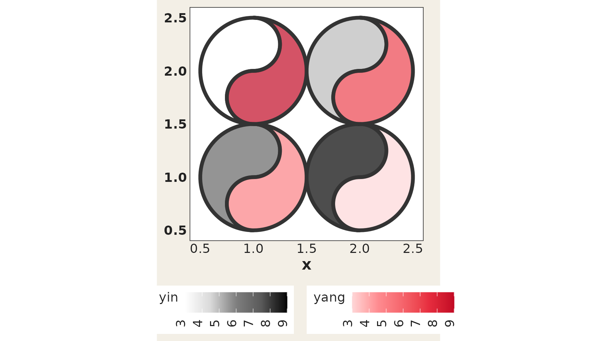
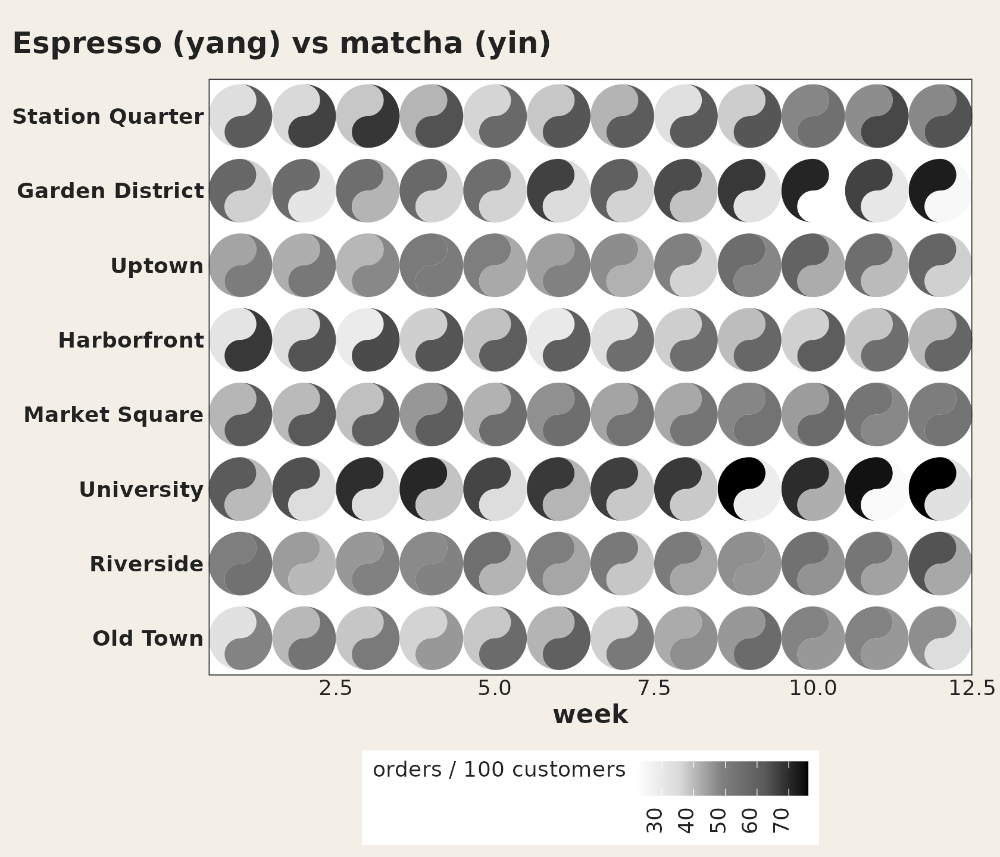
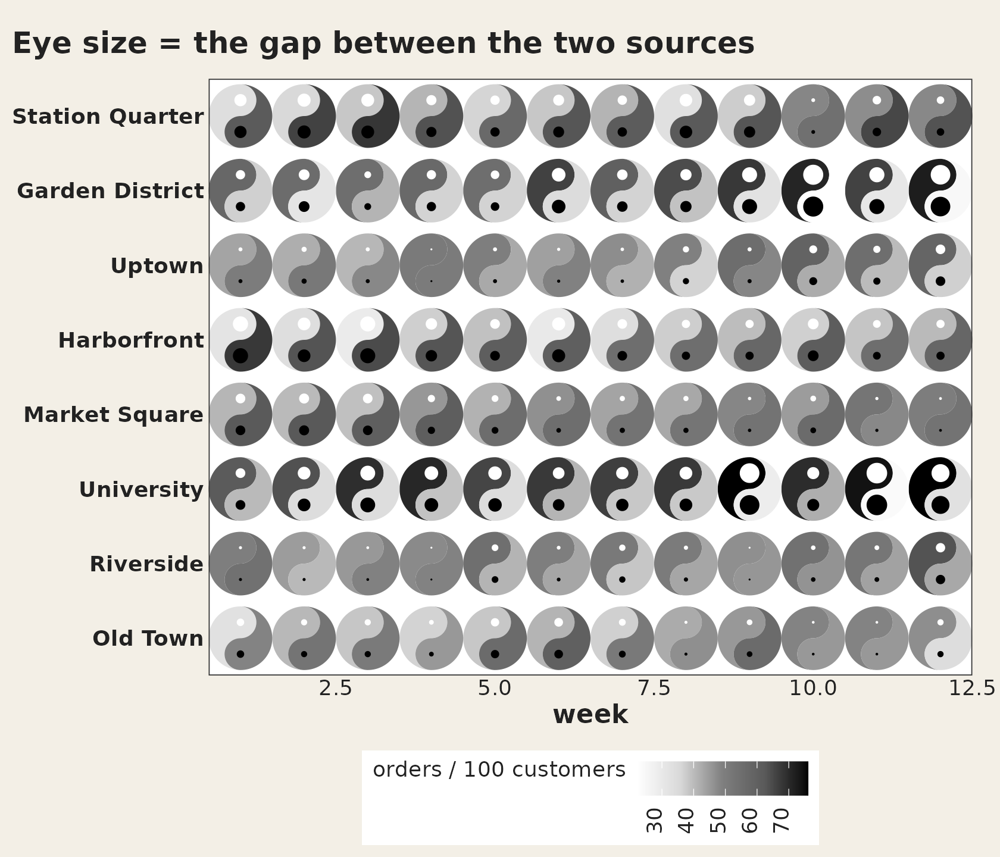
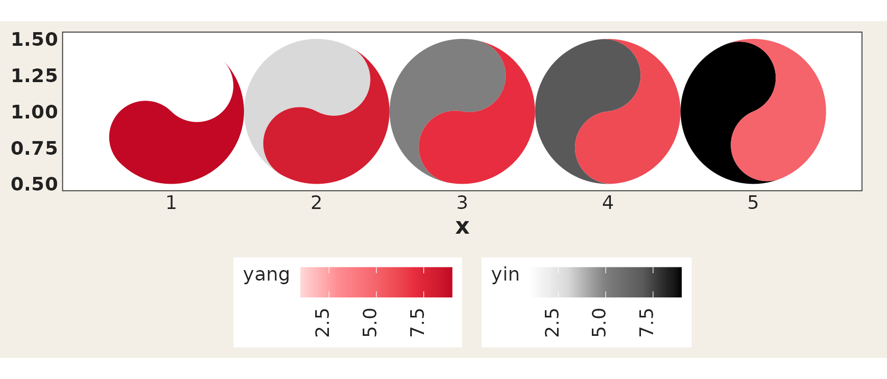
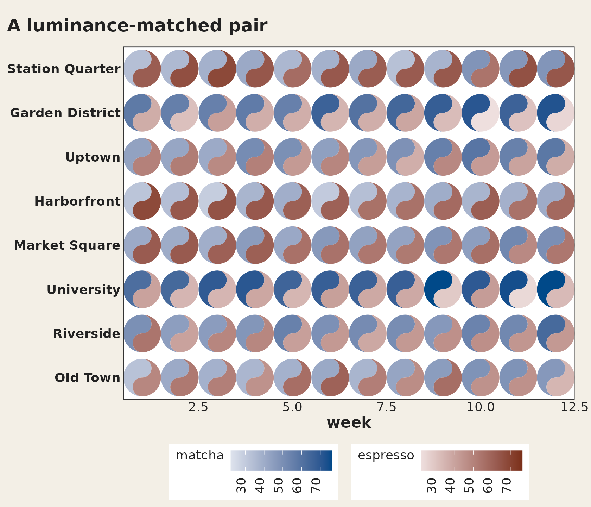
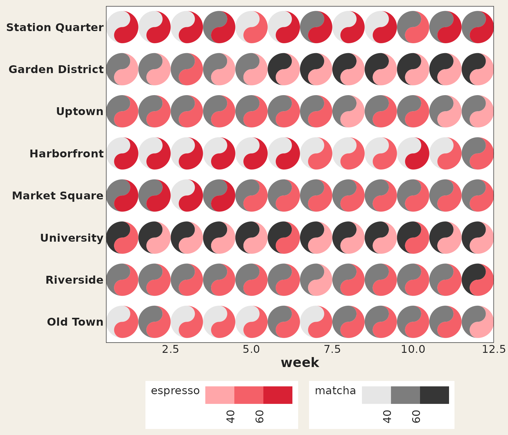

Introduction to ggtaichi
Youzhi Yu
University of
Chicago
vignettes/ggtaichi.Rmd
ggtaichi.RmdWhy taichi?
A heat map drawn with ggplot2::geom_tile() carries three
dimensions of information: the x position, the
y position, and a single value mapped to fill. That is
plenty when there is one number per cell, but it forces you to
facet (or to draw two separate maps) the moment you want to
compare two data sources on the same footing.
ggtaichi removes that limitation by replacing each cell
with a taichi (yin-yang) diagram. The symbol is a
circle split by an S-curve into two interlocking “fish”:
- the yang (light) fish is shaded by one data source, and
- the yin (dark) fish is shaded by the other.
Because both fish live in the same cell, a single
geom_taichi() layer encodes four
dimensions at once: x, y, yin,
and yang. The two sources keep their own color scales and
legends, so they can be read independently while still being compared
side by side. By default there are no decorative eyes or markers – every
drop of ink on the plot is mapped to data – and when you do switch the
classic eyes on (eyes = TRUE, new in v0.2.0), they can
carry data too, taking a single glyph up to six
dimensions.
Reading a single symbol
It is worth zooming in on one cell to see the anatomy of the glyph. The yang fish (its bulb at the bottom) carries one source; the yin fish (its bulb at the top) carries the other. Each half is filled by its own gradient, so a lighter or darker shade is a smaller or larger value.
one <- data.frame(x = 1, y = 1, google = 7, twitter = 3)
ggplot(one, aes(x, y)) +
geom_taichi(yin = twitter, yang = google) +
coord_fixed() +
theme_taichi()
Here the yang (red) fish reads 7 and the yin (grey) fish
reads 3; the deeper the ink, the larger the number relative
to the rest of the data.
The example data
ggtaichi ships with the same data sets used by its
foundational package ggDoubleHeat. pitts_tg
records the 30-week COVID-related Google and Twitter incidence rates for
9 categories in the Pittsburgh Metropolitan Statistical Area (MSA).
head(pitts_tg)
#> # A tibble: 6 × 6
#> msa week week_start category Twitter Google
#> <chr> <int> <date> <chr> <dbl> <dbl>
#> 1 Pittsburgh 1 2020-06-01 Covid 0.965 0.681
#> 2 Pittsburgh 1 2020-06-01 General Virus 0.538 0.0982
#> 3 Pittsburgh 1 2020-06-01 Masks 0.466 0.117
#> 4 Pittsburgh 1 2020-06-01 Sanitizing 0.0561 0.127
#> 5 Pittsburgh 1 2020-06-01 Social Distancing 0.294 0.0386
#> 6 Pittsburgh 1 2020-06-01 Symptoms 0.0457 0.0770states_tg is the larger sibling, repeating the same
measurements across four states, and pitts_emojis holds the
most popular weekly emoji per category. Since v0.2.0 the package also
bundles cafes_tg, a small synthetic
espresso-vs-matcha dataset whose two columns share the same units —
handy for the shared-scale features shown later. See
?pitts_tg, ?states_tg,
?pitts_emojis, and ?cafes_tg for the full
descriptions.
A first taichi grid
The two value columns are passed to the yin and
yang arguments. Everything else – the
x/y mapping, faceting, titles – is plain
ggplot2. The legend titles default to the column names you
supplied (Twitter and Google here).
ggplot(pitts_tg, aes(x = week, y = category)) +
geom_taichi(yin = Twitter, yang = Google) +
theme_taichi() +
ggtitle("Pittsburgh Google & Twitter Incidence Rate (%)")
Each symbol stays round regardless of the panel’s aspect ratio, so
you do not need coord_fixed(). The shape
is sized in square units, like the radius of a
grid::circleGrob().
Fewer cells, bigger glyphs
Thirty weeks across nine categories is a lot of ink in one panel. When the goal is to read individual symbols rather than scan an overall texture, subset the data: fewer cells means each taichi is drawn larger.
pitts_small <- subset(pitts_tg, week <= 6)
ggplot(pitts_small, aes(x = week, y = category)) +
geom_taichi(yin = Twitter, yang = Google) +
theme_taichi() +
ggtitle("The first six weeks, drawn large")
Which source should be yin?
yin defaults to a grey (luminance) ramp and
yang to a red ramp, echoing the “ink and seal” look of a
classic taichi. The choice is yours, but a useful rule of thumb is to
put the source you want to read as intensity on
yin (the eye reads darkness quickly) and the source you
want to read as warmth on yang.
Customizing the color scales
Each fish gets its own scale. yang_colors and
yin_colors accept any color vector (usually hex codes), and
yang_name / yin_name relabel the legends. Any
extra argument in ... is forwarded to both
auto-built fill scales, so you can, for example, set common
limits so the two legends share a range, or pass an
na.value. When the two fish need different scale
options – or an entirely different scale type – hand a scale object or
constructor to yin_scale / yang_scale and it
is used verbatim.
ggplot(pitts_small, aes(x = week, y = category)) +
geom_taichi(
yin = Twitter, yin_name = "Twitter (%)",
yin_colors = c("#deebf7", "#3182bd", "#08306b"),
yang = Google, yang_name = "Google (%)",
yang_colors = c("#fee6ce", "#e6550d", "#7f2704")
) +
theme_taichi()
Removing the panel padding
ggplot2 leaves a margin around discrete and continuous
scales, which can make a taichi grid look like it is floating.
remove_padding() trims it — as of v0.2.0 it detects each
axis’s scale type by itself, and you can still spell it out with
"c" (continuous) / "d" (discrete) when you
want to override the detection.
ggplot(pitts_small, aes(x = week, y = category)) +
geom_taichi(yin = Twitter, yang = Google) +
remove_padding() +
theme_taichi()
Comparing places with facets
Because geom_taichi() is an ordinary layer, faceting
works out of the box. The states_tg data set carries the
same measurements across four states; pairing two of them over a few
weeks keeps every glyph large and legible.
two_states <- subset(states_tg, state %in% c("New York", "Texas") & week <= 6)
ggplot(two_states, aes(x = week, y = category)) +
geom_taichi(yin = Twitter, yang = Google) +
facet_wrap(~ state, ncol = 1) +
remove_padding(x = "c", y = "d") +
theme_taichi() +
ggtitle("New York vs Texas, weeks 1-6")
Theming
theme_taichi() is a light, off-white companion theme
that bottoms the legends, drops the panel grid and ticks, and emphasizes
the axis labels. It is a normal ggplot2 theme, so you can
override any element afterwards, or skip it entirely and bring your
own.
ggplot(pitts_small, aes(x = week, y = category)) +
geom_taichi(yin = Twitter, yang = Google) +
theme_taichi() +
theme(plot.background = element_rect(fill = "white")) +
ggtitle("theme_taichi(), then tweaked")
The glyph’s other channels
Rotation
The angle argument rotates each glyph by the given
number of degrees. It can be a constant (same angle for every cell) or a
column name (one angle per cell), encoding a directional or temporal
variable as orientation.
one_rot <- data.frame(
x = c(1, 2, 1, 2),
y = c(2, 2, 1, 1),
yin = c(3, 5, 7, 9),
yang = c(9, 7, 5, 3),
rot = c(0, 45, 90, 180)
)
ggplot(one_rot, aes(x, y)) +
geom_taichi(yin = yin, yang = yang, angle = rot,
limits = c(0, 10)) +
coord_fixed() +
theme_taichi()
Data-driven eyes
Setting eyes = TRUE draws the classic taichi dots, each
sitting in its own fish’s head: the yin eye in the top bulb, the yang
eye in the bottom one. With the default white and black dots the glyph
looks exactly like the traditional symbol.
one_eye <- data.frame(
x = c(1, 2, 1, 2),
y = c(2, 2, 1, 1),
yin = c(3, 5, 7, 9),
yang = c(9, 7, 5, 3)
)
ggplot(one_eye, aes(x, y)) +
geom_taichi(yin = yin, yang = yang, eyes = TRUE,
limits = c(0, 10)) + # shared limits keep the palest fish visible
coord_fixed() +
theme_taichi()
The eyes are not just decoration: yin_eye_size,
yang_eye_size, yin_eye_colour, and
yang_eye_colour all accept either a constant or an
unquoted column name, so the two dots can encode up to two further
variables – a fifth and sixth dimension on top of
x, y, and the two fills. A mapped size column
is rescaled to eye radii between 5% and 30% of the glyph radius (values
already between 0 and 0.5 are used as exact proportions, and an
NA suppresses the eye for that cell).
one_eye$reach <- c(10, 40, 25, 5) # drives the yin eye
one_eye$quality <- c(2, 1, 4, 8) # drives the yang eye
ggplot(one_eye, aes(x, y)) +
geom_taichi(yin = yin, yang = yang,
eyes = TRUE,
yin_eye_size = reach,
yang_eye_size = quality,
limits = c(0, 10)) +
coord_fixed() +
theme_taichi()
Categorical fills
geom_taichi() now automatically detects whether the
yin / yang columns are numeric or discrete
(factor / character / logical) and picks the appropriate scale –
computed expressions such as factor(week) work too. With
the default palettes the discrete colors are sampled from the ramp
skipping its palest end, so every category stays visible.
disc <- data.frame(
x = c(1, 2, 1, 2),
y = c(2, 2, 1, 1),
method = factor(c("A", "B", "C", "A")),
outcome = factor(c("win", "loss", "win", "loss"))
)
ggplot(disc, aes(x, y)) +
geom_taichi(yin = method, yang = outcome) +
coord_fixed() +
theme_taichi()
For full control, hand any fill scale – an object or a constructor
function – to yin_scale / yang_scale; it
overrides the auto-detection and the *_colors vectors
entirely:
ggplot(disc, aes(x, y)) +
geom_taichi(yin = method, yang = outcome,
yin_scale = scale_fill_viridis_d,
yang_scale = scale_fill_viridis_d(name = "outcome", option = "rocket",
begin = 0.4, end = 0.8)) +
coord_fixed() +
theme_taichi()
Missing values
A fish whose fill value is NA is painted in its scale’s
na.value colour (grey by default; pass
e.g. na.value = "transparent" through ... to
hide it), so one missing source never suppresses the other fish.
na.rm = TRUE additionally drops rows with missing
positions, and an NA eye size simply skips that cell’s
eye.
Geom parameter routing
All standard geom parameters (alpha,
colour, linewidth, linetype,
width, height, na.rm,
show.legend) are now properly accepted by
geom_taichi() and forwarded to the underlying fish geoms.
The deprecated size aesthetic has been replaced with
linewidth.
one_lwd <- data.frame(
x = c(1, 2, 1, 2),
y = c(2, 2, 1, 1),
yin = c(3, 5, 7, 9),
yang = c(9, 7, 5, 3)
)
ggplot(one_lwd, aes(x, y)) +
geom_taichi(yin = yin, yang = yang,
alpha = 0.7, linewidth = 1.5, colour = "#333333") +
coord_fixed() +
theme_taichi()
Shared limits and a single legend
When the two sources are measured in the same units, two separate
legends are noise. shared_limits = TRUE aligns the limits
of both fill scales (the union range of the two columns, or the union of
levels for two discrete sources), so equal values carry equal ink.
shared_legend = TRUE goes further: both fish use the yin
palette and only one legend is shown. The synthetic
cafes_tg data is the natural demo — espresso and matcha
orders per 100 customers:
ggplot(cafes_tg, aes(x = week, y = neighbourhood)) +
geom_taichi(yin = matcha, yang = espresso,
shared_legend = TRUE,
yin_name = "orders / 100 customers") +
remove_padding() +
theme_taichi() +
ggtitle("Espresso (yang) vs matcha (yin)")
For diverging data (values around 0), pass a diverging palette to
both color arguments and symmetric limits through ..., e.g.
limits = c(-5, 5) — both fish then hinge on the same
midpoint.
The fish geoms are exported
geom_yin_fish() and geom_yang_fish() — the
layers geom_taichi() is built from — are now exported and
documented. Reach for them when you want one fish only, or full manual
control over scales and ggnewscale::new_scale_fill()
stacking. See ?geom_yin_fish.
New in v0.3.0
How much bigger? The explicit channel
Two fish sharing one position is what the comparison literature calls a superposition design. Its strength is that the two sources are in the same place, so spatial patterns line up and “are these similar?” is answered at a glance. Its weakness is precise: it can say which is bigger, but not by how much. For that, the relationship has to be computed and drawn — what the same literature calls explicit encoding.
explicit does that. It takes one of four statistics —
"difference" (yin - yang),
"ratio", "log_ratio", or "z" (the
difference of the two standardised sources, for when the two are not in
the same units) — and explicit_channel decides where in the
glyph it goes.
The default is the eyes, and it is the tidiest option: the eyes already exist, they are visually subordinate to the fills, and a big eye reads as “look here”. Cells where the two sources agree exactly get no eye at all, so a plain glyph means agreement.
ggplot(cafes_tg, aes(x = week, y = neighbourhood)) +
geom_taichi(yin = matcha, yang = espresso,
shared_legend = TRUE,
yin_name = "orders / 100 customers",
explicit = "difference") +
remove_padding() +
theme_taichi() +
ggtitle("Eye size = the gap between the two sources")
explicit_channel = "angle" is the most accurate
choice. Direction and angle are read far more precisely than shading, so
the gap becomes legible to a precision the fills can never reach:
upright means the two sources agree, and the lean shows which way and
how far. The price is the symbol’s upright orientation, which is why it
is a choice rather than the default.
tilt <- data.frame(x = 1:5, y = 1, yin = c(1, 3, 5, 7, 9), yang = 9:5)
ggplot(tilt, aes(x, y)) +
geom_taichi(yin = yin, yang = yang, shared_limits = TRUE,
explicit = "difference", explicit_channel = "angle") +
coord_fixed() +
theme_taichi()
The other two channels are "border" (outline width) and
"radius" (glyph size, scaled by area rather than diameter,
so cells where the sources agree shrink). explicit_range
sets the output range of whichever you pick, and the statistic is
rescaled across the whole layer, so facets stay comparable.
A ratio of a zero or negative value is NA with a warning
— never Inf.
The same numbers, as a table and as a heatmap
Sometimes the right answer to “by how much?” is not a glyph.
taichi_summary() returns every statistic per cell, plus
which source dominates and the cell’s rank by the size of the gap:
summ <- taichi_summary(cafes_tg, yin = matcha, yang = espresso,
x = week, y = neighbourhood)
head(summ[order(summ$rank), ], 5)
#> x y yin yang difference ratio log_ratio z dominant
#> 35 11 University 74.1 24.0 50.1 3.087500 1.626439 4.260819 matcha
#> 82 10 Garden District 70.9 22.2 48.7 3.193694 1.675226 4.152065 matcha
#> 33 9 University 76.1 28.4 47.7 2.679577 1.422006 4.037432 matcha
#> 84 12 Garden District 72.2 24.7 47.5 2.923077 1.547488 4.038890 matcha
#> 36 12 University 76.1 32.9 43.2 2.313070 1.209809 3.637092 matcha
#> rank
#> 35 1
#> 82 2
#> 33 3
#> 84 4
#> 36 5and geom_taichi_diff() draws it as a diverging heatmap,
with limits symmetric about “the two sources agree”, so the mid colour
really is the middle:
ggplot(cafes_tg, aes(x = week, y = neighbourhood)) +
geom_taichi_diff(yin = matcha, yang = espresso) +
remove_padding() +
theme_taichi() +
ggtitle("matcha - espresso")
Use it beside a taichi grid rather than instead of one: the glyphs show the levels, the tiles show the gap.
Palette pairing is a correctness problem
The whole point of the design is comparing two sources fairly, and the fills are what carries the comparison. If the two ramps do not span the same luminance range then equal values do not produce equal visual weight, and one fish appears to dominate wherever the data says the two are level. That is not a matter of taste; it decides whether the chart is telling the truth.
taichi_check_palette() measures it. With no arguments it
measures the package’s own defaults:
taichi_check_palette()
#> <ggtaichi palette check>
#>
#> step yin L C yang L C dL
#> 1 #FFFFFF 100.0 0.0 #FED7D8 89.2 14.5 10.8
#> 2 #EBEBEB 93.0 0.0 #FFB2B3 79.8 30.2 13.2
#> 3 #D8D8D8 86.3 0.0 #FE8C91 70.8 46.6 15.6
#> 4 #AAAAAA 69.6 0.0 #F9787D 65.8 53.9 3.8
#> 5 #7F7F7F 53.2 0.0 #F4636B 61.0 61.4 -7.8
#> 6 #6B6B6B 45.2 0.0 #EE4B54 55.9 70.0 -10.7
#> 7 #595959 37.8 0.0 #E62C3F 50.7 78.1 -12.8
#> 8 #2D2D2D 18.5 0.0 #D41D31 45.8 77.1 -27.3
#> 9 #000000 0.0 0.0 #C10724 40.6 75.7 -40.6
#>
#> largest luminance mismatch : 40.6 L* (tolerance 5.0)
#> largest chroma mismatch : 78.1
#> how far apart the ramps stay (median distance, step for step)
#> normal 27.2
#> deutan 20.9
#> protan 12.7 (much worse than normal vision)
#> tritan 28.4
#>
#> Verdict: FAIL
#> the two ramps do not share a luminance trajectory, so equal
#> values do NOT read as equal ink and one fish will appear to
#> dominate. Consider `palette = "balanced"` or `taichi_palette_pair()`.The verdict is honest: the grey yin ramp runs the full way to black
while the red yang ramp stops around L* 41, a mismatch of about 41
units, so the yin fish has always looked heavier at the dark end.
The defaults have not been changed — every existing
figure would move — but palette = "balanced" gives a pair
built to be matched, differing only in hue:
taichi_check_palette(palette = "balanced")
#> <ggtaichi palette check>
#>
#> step yin L C yang L C dL
#> 1 #DEE3EC 90.1 5.0 #EDDFDE 89.9 5.1 0.2
#> 2 #C5CDDE 82.3 9.4 #E0C7C5 82.2 9.4 0.0
#> 3 #ADB8D1 74.7 13.9 #D2B1AC 74.9 13.1 -0.2
#> 4 #95A4C3 67.2 17.7 #C49A95 67.3 17.2 -0.1
#> 5 #7D91B6 59.9 21.7 #B6857E 60.1 21.0 -0.2
#> 6 #647EA9 52.4 25.9 #A76F66 52.4 25.4 -0.1
#> 7 #4A6C9D 45.1 30.4 #98594E 44.8 30.3 0.3
#> 8 #2F5A93 37.9 36.1 #894433 37.3 36.5 0.6
#> 9 #004888 30.4 41.6 #792E19 29.6 43.2 0.8
#>
#> largest luminance mismatch : 0.8 L* (tolerance 5.0)
#> largest chroma mismatch : 1.5
#> how far apart the ramps stay (median distance, step for step)
#> normal 26.4
#> deutan 27.7
#> protan 22.9
#> tritan 40.3
#>
#> Verdict: PASS
#> the two ramps share a luminance trajectory, so equal values
#> read as equal ink.
ggplot(cafes_tg, aes(x = week, y = neighbourhood)) +
geom_taichi(yin = matcha, yang = espresso,
palette = "balanced", shared_limits = TRUE) +
remove_padding() +
theme_taichi() +
ggtitle("A luminance-matched pair")
The other presets are "diverging" (both ramps reaching a
shared near-white midpoint, so the two fish read as the two arms of one
diverging scale), "viridis_pair",
"brewer_pair", and "print_safe" — a grey ramp
and a hued ramp on the same luminance trajectory, so in colour
the two fish are told apart by hue and in greyscale they collapse to the
same ink, which keeps equal values equal in a black-and-white printout.
taichi_palette() returns any of them, and
taichi_palette_pair() builds your own from hue, luminance
and chroma.
shared_legend = TRUE deserves a mention here too. It
paints both fish with one ramp, which makes equal values equal ink
by construction — there is no pairing left to get wrong. The
cost is that the two sources are then distinguished only by their
position inside the glyph: yin is the top bulb, yang the bottom. When
the two sources really are directly comparable, that is usually the
right trade.
Binned fills, for grids too dense to read
Reading a value off a continuous luminance ramp is the least accurate perceptual task there is, and every scalability study of glyph displays finds performance falling as the glyph count rises. Matching a patch to one of five labelled bins is much closer to a categorical lookup, and the legend then says exactly which values share a colour.
ggplot(cafes_tg, aes(x = week, y = neighbourhood)) +
geom_taichi(yin = matcha, yang = espresso,
yin_scale = scale_taichi_yin_binned(n.breaks = 4),
yang_scale = scale_taichi_yang_binned(n.breaks = 4),
shared_limits = TRUE) +
remove_padding() +
theme_taichi()
shared_limits now reaches into the scales you supply, so
both fish share one set of breaks and equal values land in the same bin
— which is the whole point of binning a two-source display. The full
family is scale_taichi_yin_c() / _d() /
_binned() / _viridis_c() /
_viridis_d() and their yang counterparts; see
?scale_taichi.
Hovering for the exact values
Everything above is a way of coping with the fact that fill is an
imprecise channel. Interactivity is the other way: it hands the reader
the exact numbers without giving up the encoding.
interactive = TRUE makes the fish (and their eyes) ggiraph grobs, and
ggiraph::girafe() turns the plot into a widget:
p <- ggplot(cafes_tg, aes(x = week, y = neighbourhood)) +
geom_taichi(yin = matcha, yang = espresso, interactive = TRUE) +
theme_taichi()
ggiraph::girafe(ggobj = p)The default tooltip carries both values, their difference, and the
cell’s coordinates. data_id_by decides what a hover
highlights, and the interesting setting is "source":
hovering any yin fish lights up the yin fish in every cell,
which turns the superposition display into a single-source display for
as long as the pointer rests there. That is the one thing a static
superposition cannot do — it lets the reader take the comparison apart
instead of doing it in their head. tooltip,
data_id and onclick take a data column when
you want to say something else.
There is a live example in the gallery.
plotly is not supported and will not be:
ggplotly() cannot translate custom grobs, which is what
this package draws.
Following the theme
ggplot2 4.0 lets a theme set geom defaults through
theme(geom = element_geom(ink, paper, accent)). ggtaichi
now reads them, so the fallback fish, the outlines and both eye colours
follow a dark theme instead of disappearing into it. On any light theme
the result is pixel for pixel what it always was. Legend keys are small
taichi symbols now as well — each fish geom’s key fills its own half —
with key_glyph = "rect" to get the old rectangles back.
When (not) to use taichi
A taichi grid is at its best when comparing two sources cell by cell is the question — the interlocking fish put both numbers in one glance. A few honest caveats:
- Dense grids become texture. Past roughly a thousand cells you stop reading symbols and start reading fields; that is still useful for spotting bands and regime changes, but for precise lookup, subset (as done above) or facet.
-
Luminance is a coarse channel. Small differences in
a fish’s shade are hard to judge; when exact comparison matters, add
shared limits (
shared_limits = TRUE) so at least the two fish are on the same footing, and consider printing the numbers alongside. -
The two ramps must be a fair pair. The defaults are
not: run
taichi_check_palette()and it reports a luminance mismatch of about 41 L* units between the grey and red ramps, which means equal values do not read as equal ink. Usepalette = "balanced"when the comparison has to be fair, and see the palette section above. -
Colour-vision deficiency.
taichi_check_palette()also simulates deuteranopia, protanopia and tritanopia; the default pair loses about half its separation under protanopia.palette = "balanced"holds up,palette = "print_safe"survives greyscale printing, andscale_taichi_yin_viridis_c()/scale_taichi_yang_viridis_c()are there if you prefer the viridis family. -
One source missing? An
NAfish keeps its place (painted inna.value), so absence is visible rather than silently dropped.
Acknowledgement
ggtaichi is a spinoff of the ggDoubleHeat
package, which pioneered the two-source “double” heat map and supplies
the example data used throughout this vignette. ggtaichi
takes that two-scale design and re-imagines the per-cell glyph as a
taichi diagram.